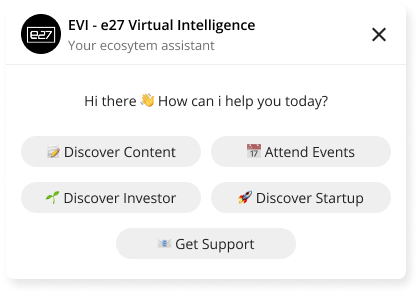
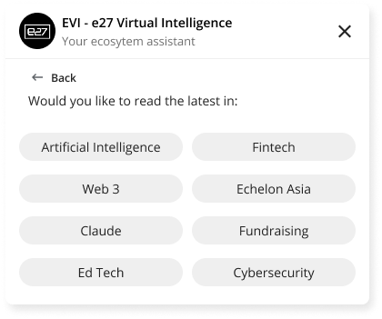
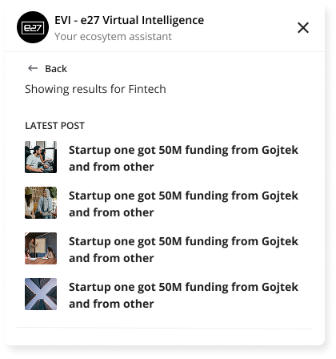

Reducing Discovery Friction from 3 Steps to Zero for e27's Startup Community
Reduced interaction steps from 3 to 0. Replaced a menu-first interrogation model with an instant daily intelligence brief that surfaces personalised insights, trending startups, and featured events the moment it opens.
Three clicks before any value
e27 shipped EVI as a pop-up assistant in the lower-right corner. The interaction model required users to navigate through three selection steps before seeing any content:
- Step 1: "How can I help you today?" — pick from 5 actions (Discover Content, Attend Events, Discover Investors, Discover Startups, Get Support)
- Step 2: "Would you like to read the latest in:" — pick from 8 keyword pills (Singapore, AI, Global, Echelon, etc.)
- Step 3: Finally see results — article titles with thumbnails
Every step was a drop-off point. The user had to know what they wanted before the assistant could help — defeating the purpose of a discovery tool.
What I observed
- Most users came to e27 for news (funding rounds, startup growth, ecosystem updates) and startup discovery — not to navigate a menu
- The 5-action grid treated all actions as equal priority, but usage was heavily skewed toward content and startups
- The keyword selection step added friction without clarity — users just picked the first interesting option
- By the time results appeared, the user had invested 3 interactions with zero payoff



What success looks like
- Deliver value on first open — no selection required to see relevant content
- Prioritise what users actually come for (news + startups) over secondary actions
- Reduce steps to content from 3 to 0
- Keep all original functionality accessible without cluttering the primary experience
Understanding the real usage patterns
Analysed the original EVI interaction flow against user behaviour patterns on e27.
- Content discovery and startup browsing accounted for the majority of widget interactions
- Users who reached Step 3 (results) engaged well — the problem was getting them there
- The "Guide Keywords" step added cognitive load without meaningful filtering — most users picked broadly (e.g., "Singapore" or "AI")
- Events and support were low-frequency actions that didn't need primary placement
From interrogation to briefing
Replace the interrogation model (ask → filter → show) with a briefing model (show → let them explore). Surface the highest-value content immediately, push secondary actions to the bottom.
What I ruled out
- Keeping the 3-step flow but faster — the steps themselves are the problem, not the speed
- Adding a search bar — creates expectation of general knowledge; EVI's value is curated ecosystem content
- Removing action categories entirely — some users do want to specifically find investors or get support; those paths need to exist
Chose a daily intelligence brief format — personalised insights at the top, trending startups in the middle, featured event as a highlight card, and the original 5 actions collapsed into "More Actions" at the bottom. Zero steps to value. Full functionality preserved.
Four design bets
Content-first, not menu-first
Open the widget and immediately see "Insights for You" — categorised news cards with no prior selection required. The 80% use case (reading news) is served in 0 clicks instead of 3. Trade-off: less user control over what appears first — the AI/system decides what's relevant.
Trending Startups surfaced by default
Show trending startup cards with vertical tags and a connect button directly in the main view. Startup-investor connections are e27's core value prop — hiding them behind a menu meant most users never saw them. Trade-off: takes vertical space, not every user wants startup discovery on every visit.
Featured Event as a visual highlight card
A single prominent event card ("Don't Miss") with event name, date, and format — not a list of 10 events. One well-presented event converts better than a list of 10 titles. Trade-off: only shows one event; users looking for multiple need to go deeper.
Original actions demoted to "More Actions"
Content, Events, Investors, Startups, Support — all still accessible as small icons at the bottom. The original design optimised for the 20% use case at the expense of the 80%. Flipping the hierarchy serves the majority without removing functionality.
Before and after
Original (EVI) — 3 steps to value
Redesigned (NEXUS) — 0 steps to value
Result: 0 interactions before seeing relevant content. 1 tap to engage.
Where AI helps, where humans stay in control
The briefing model requires intelligence — it needs to know what's relevant to this user, today. Without AI, "Insights for You" would just be the latest 3 articles with no personalisation.
Human Control
- "Investor View" toggle — user explicitly switches perspective
- "Show More" links — user decides when to go deeper
- "More Actions" — full original functionality preserved
- Every card is tappable — user chooses what to engage with
Trust Mechanisms
- No hallucination — all content from e27's published ecosystem data
- Categorised cards (Startup Growth, Milestone, Funding) — user knows why something is shown
- Freshness signal — "Your daily ecosystem brief is ready"
- Graceful empty states — sections collapse if no data
Measurable improvement
| Section | What it shows | Interaction |
|---|---|---|
| Insights for You | 3 categorised news cards with Investor View toggle | 0 — visible on open |
| Trending Startups | Startup cards with vertical, description, + connect | 0 — visible on scroll |
| Don't Miss | Featured event card with date and format | 0 — visible on scroll |
| More Actions | Content, Events, Investors, Startups, Support icons | 1 tap — specific navigation |
What I'd do differently
I'd validate the "Investor View" toggle with data before shipping. It assumes users self-identify by role — but many e27 users are both founders AND investors. A better signal might be behavioural (what they click on) rather than explicit (a toggle).
What I'd push further
Make the briefing truly personalised over time. Right now it's role-based (investor vs. general). With engagement data, NEXUS could learn which verticals, funding stages, and regions each user cares about — making the daily brief increasingly relevant without any manual filtering.
See more work
Back to the portfolio or check out another case study.